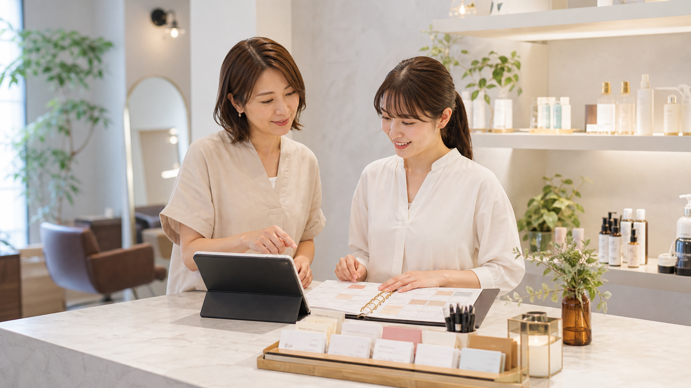

他社の改善事例 / 美容サロン・予約管理
予約変更とカルテ確認を、施術前のチェックリストへまとめる
開店前のサロンでは、時間変更の連絡、前回カラーや薬剤メモ、未返信のメッセージが同時に集まります。AIは予約履歴とカルテメモを施術前チェックに整え、スタッフは提案内容、個別事情、送信文だけを確認してお客様を迎えます。

先に結論
接客を機械化するのではなく、お客様を覚えているように準備します。
開店前、予約表には時間変更やメニュー追加が入り、紙カルテには前回カラー、薬剤の注意、会話メモが残っています。
未返信のメッセージやメールも重なるため、スタッフは受付準備をしながら「今日のお客様に先に伝えること」を頭の中で抱えがちでした。
予約システムの変更履歴、メッセージアプリやメール、紙カルテの写真、前回メモをAIへ渡し、予約変更、注意点、返信案、スタッフ確認欄に分類します。
人は最後に、施術提案、料金やメニュー変更、個別事情、個人情報、送信前の言い回しを確認します。
仕事の変化
開店前に散らばる材料、AIで整える下書き、人が確認する接客判断を分類します。
現場で起きていたこと
開店前、受付台には予約表、紙カルテ、未返信のメッセージ、前回メモが重なっていました。受付準備は進んでいても、前回の色味、避けたい薬剤、今日伝える一言を見落としていないかが残ります。
変えたこと
AIへ渡すのは、予約変更履歴、メッセージアプリやメール、紙カルテの写真、前回施術メモです。AIは予約変更、前回施術、注意点、返信案、スタッフ確認欄に分け、スタッフが直せる下書きとして出します。
改善後に残るもの
スタッフは探し物に使っていた数分を、色味の提案、伝える順番、新人への申し送りに使えます。
改善後の実感
予約変更とカルテ確認が、探す仕事から接客前に整える仕事へ変わりました。
予約とカルテが分かれる
時間変更、メニュー追加、前回カラー、薬剤注意、未返信の連絡が別々に残り、担当者が毎回探していました。
施術前チェックから見る
変更点、前回メモ、注意点、返信案が同じ順番で並び、スタッフは確認と修正から始められます。
接客前に余白ができる
探す時間と見落としの不安が減り、来店前にお客様への提案や声かけを整えられます。
施術前チェック
予約変更とカルテ探しを、来店前の見直しリストへ変えました。
開店前の受付台では、受付責任者の前に予約表、紙カルテ、前回カラーのメモ、未返信のメッセージ、電話の折り返しメモが重なっていました。
入口マットを直している途中で時間変更の電話が入り、別のお客様からはメニュー追加の相談が届きます。タオルをそろえる手は動いていても、薬剤の注意や前回の希望を思い出す余裕はありません。
以前は、予約システム、メッセージアプリ、紙カルテ、手書きメモを順番に開き、見つけた内容を担当スタッフへ口頭で渡していました。
改善後は、予約変更履歴、メッセージ本文、紙カルテの写真、前回施術メモをまとめてAIへ渡します。
AIはお客様ごとに、変更点、前回カラー、薬剤注意、未返信への返信案、スタッフが確認する欄を同じ順番で一覧にします。
スタッフはその一覧を見て、施術提案、料金やメニュー変更、送信文、個別事情を自分で確認してから使います。
探し物でざわついていた開店前に、色見本を出し、新人へ一言申し送り、お客様を落ち着いて迎える余裕が生まれます。
改善のイメージ
予約変更、カルテ、返信待ちを施術前チェックとして一覧にします。
施術前にそろえる
予約変更、前回メモ、薬剤の注意、未返信の連絡を同じ場所で見られるため、見落としを減らせます。
予約カードで確認する
通常どおり進める予約と、時間変更・返信待ち・スタッフ確認が必要な予約を分けて見られます。
接客前に整える
確認が終われば、色味の提案、声かけ、新人への申し送りに取りかかれます。
導入前
導入前は、施術前に予約変更、カルテ、未返信連絡を探し直していました。
予約表、メッセージアプリやメール、紙カルテ、前回メモが別々にあり、スタッフが開店前に行き来していました。
入口準備、電話対応、掃除の合間に、時間変更や薬剤注意を拾っていました。
前回の希望や伝える一言を、担当者の記憶と申し送りに頼っていました。
仕事の流れ
予約変更とカルテ確認では、AIが材料を並べ、スタッフが施術と送信の判断をします。
予約システム、メッセージアプリやメール、紙カルテの写真、前回メモを同じ場所に用意します。
時間変更、メニュー追加、前回施術、薬剤の注意、未返信の連絡に分類します。
お客様への返信案と、スタッフが直す確認欄を分けて表示します。
施術提案、料金やメニュー変更、個人情報、送信内容、お客様への伝え方は人が目を通します。
人とAIの分担
AIが整える準備と、スタッフが持つ接客判断を分類します。
AIで先に進める作業
- 予約変更履歴の整理
- 過去施術メモの要約
- 薬剤・好み・未返信の注意点抽出
- フォロー文と申し送りの下書き
人が決めること
- 施術内容と提案の判断
- 料金やメニュー変更の確認
- 顧客感情への配慮
- 個人情報と送信内容の確認